CHARACTER SKILL / WEAPON EFFECT
VIDEO클라이언트 프로그래머 갈주성
그래픽스와
시뮬레이션
게임 클라이언트 환경에서 구현한 렌더링·파티클 시스템과 수학 기반의 시각 효과를 기술별로 정리했습니다.
- C++
- DirectX 9 / 11
- HLSL
- VFX
- Shader
- Physics
Showreel
Particle & Tools
자체 개발 파티클 시스템
· 전용 이펙트 에디터
파티클 및 메시 이펙트의 생성·갱신·표현과 제작 도구를 직접 구현했습니다.
PARTICLE SYSTEM / CUSTOM TOOL
VIDEO파티클 제작 도구
MESH EFFECT / CUSTOM TOOL
VIDEO메시 이펙트 제작 도구
RESOURCE CONTROL
VIDEORGB 채널 분리 리소스의 색상 제어
ENVIRONMENT VFX
VIDEO환경 이펙트 · 화염, 용암, 붕괴
Simulation
시간 보간, 섭스텝, 관성
프레임 단위 입자 집중 문제를 이미터 경로 보간으로 해결하고, 입자 이동 벡터를 제어했습니다.
2-1
섭스텝 · 방출 경로 보간
FINAL RESULT / IN-GAME
적용 결과인게임 영상
PROBLEM → IMPROVEMENT → RESULT
DIAGRAM문제 → 개선 → 완성

TOOL VALIDATION
VIDEO섭스텝 유무에 따른 도구 시연
두 스킬의 확대 시연
개별 반복 · 프레임 사이 궤적 확인CLOSE-UP / 검기
GIF검기 이펙트
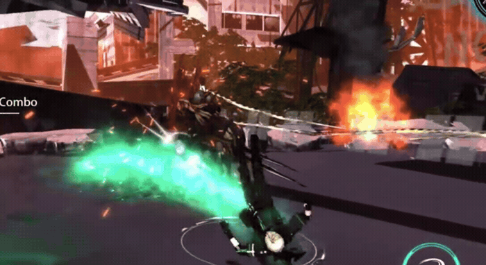
CLOSE-UP / 전격
GIF전격 이펙트
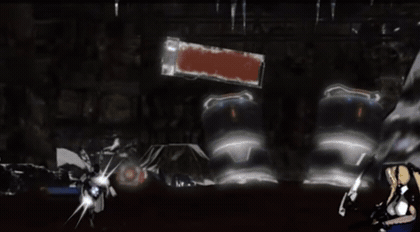
2-2
관성 · 이동 벡터 제어
DEMONSTRATION
VIDEO관성 적용 시연
EXPLANATION
GIF관성에 따른 입자 경로 변화
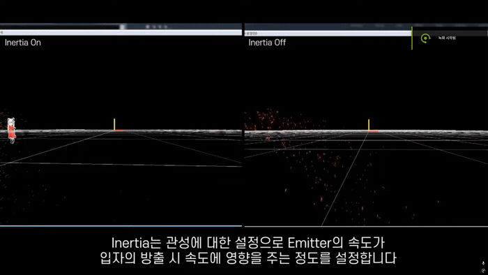
Shader
셰이더와
화면 효과
HLSL과 렌더 타깃을 활용해 화면 왜곡·색상 변형·깊이 기반 합성을 구현했습니다.
SCREEN SPACE
VIDEO렌더 타깃 기반 화면 왜곡
COLOR CONTROL
VIDEOTint · 채도 제어
DEPTH AWARE VFX
VIDEO소프트 파티클 · 근접부 처리
라디얼 블러 · 피사계 심도
화면 후처리RADIAL BLUR
GIF화면 중심 기반 블러

DEPTH OF FIELD
IMAGE초점 거리 기반 이미지 합성

Physics
뉴턴 역학 기반
자체 물리엔진 구현
반사벡터·중력·반동·충돌 후 이동을 직접 계산하고, 각 결과를 무기와 물체의 동작에 적용했습니다.
무기 반동과 투사체
GUNFIRE REBORNAIM & RECOIL
GIF조준 · 반동 · 착탄 분포
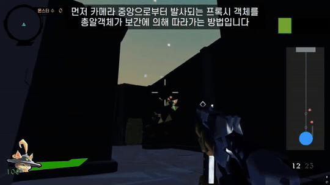
PROJECTILE / VIEW
GIF1인칭 시점 · 투사체 동기화 비교
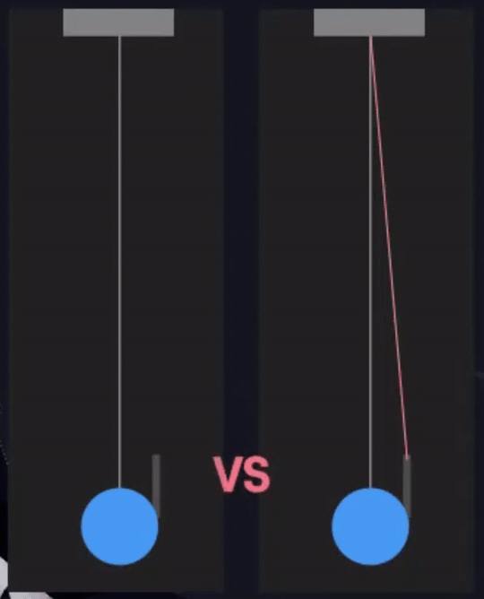
BALLISTICS & COLLISION
GIF도탄 · 산탄 분기 · 히트스캔 / 투사체 전환
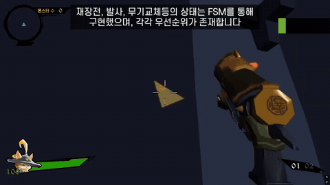
외력 · 탄도 · 충돌 연산
MASSACRE / PUNISHINGBALLISTIC EQUATION
GIF포물선 운동 · 활 탄도 계산

AI TARGETING
GIF고·저각 자동 선택
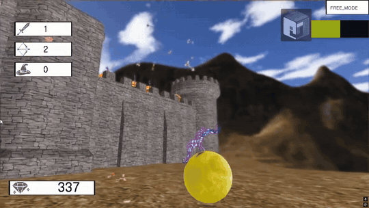
FORCE VECTOR / DEBUG
IMAGE경사면 힘 벡터 디버그
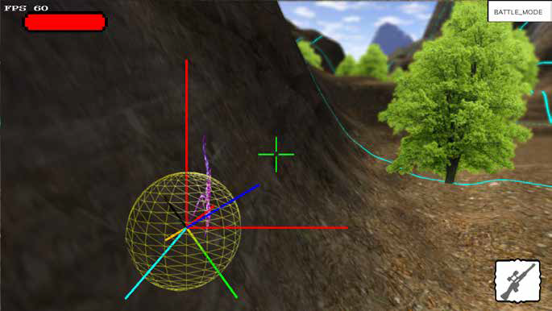
SIMULATION
VIDEO물리 운동 적용 결과
RIGID BODY / COLLISION
VIDEO오브젝트 충돌 처리
Terrain
지형 렌더링과
공간 최적화
표면 노멀과 카메라 시야를 이용해 텍스처 투영 및 연산 후보 영역을 결정했습니다.
FINAL / IN-GAME
IMAGE경사면 텍스처 늘어짐 개선
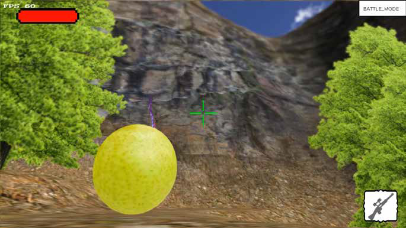
NORMAL-BASED PROJECTION
DIAGRAM노멀 방향별 텍스처 투영
절벽 면 0 / 48
FRUSTUM CULLING
IMAGE청크 단위 절두체 컬링
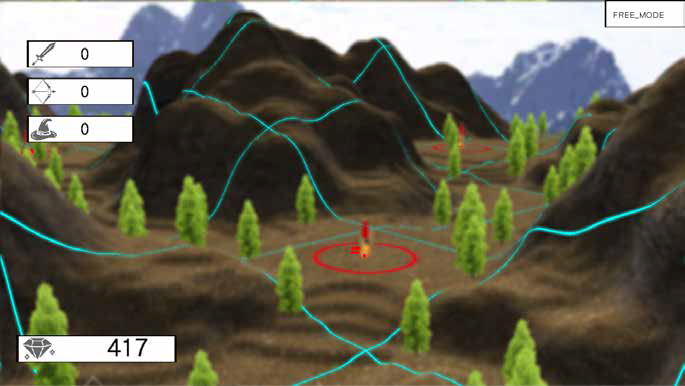
SPATIAL TEST
DIAGRAM청크 · 절두체 판정 도식
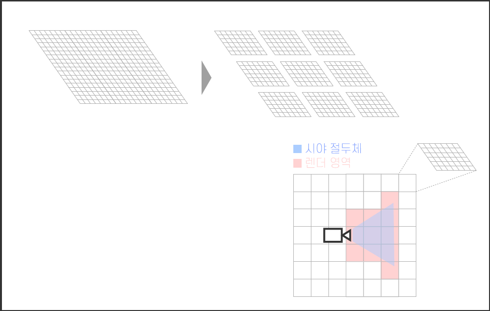
RAY PICKING / IN-GAME
GIF인게임 레이 피킹
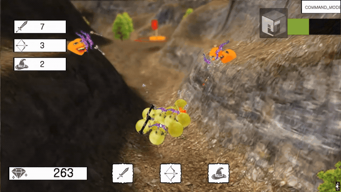
RAY PICKING / HEIGHTMAP
DIAGRAM레이 피킹 후보 범위 축소 · 높이맵
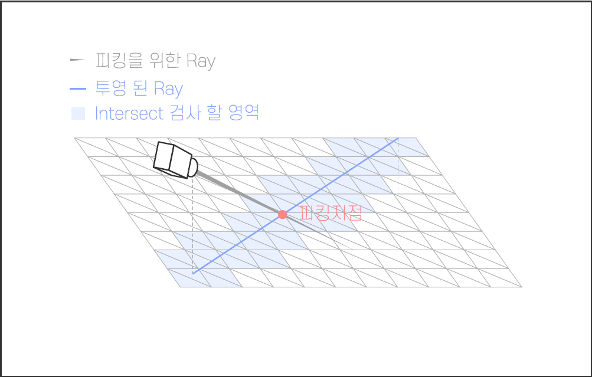
Projects
프로젝트 정보
위 구현 사례의 출처입니다. 추가 정보가 필요한 경우에만 펼쳐볼 수 있습니다.
p1PUNISHING팀 프로젝트 · C++ / DirectX 11
파티클 시스템, 이펙트 제작 도구 및 캐릭터·환경 VFX 구현 중심. 메시 이펙트·입자 렌더링·보간·셰이더를 작업했습니다.
p2MASSACRE팀 프로젝트 · C++ / DirectX 9
물리, 탄도·공간 연산, 셰이딩·후처리, 지형 렌더링 구현. 프로젝트 과정에서 영역 간 작업을 유동적으로 분담했습니다.
p3GUNFIRE REBORN개인 프로젝트 · C++ / DirectX 11
하드웨어 인스턴싱 파티클과 무기 반동, 도탄, 탄도 및 충돌 특성 구현.